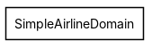
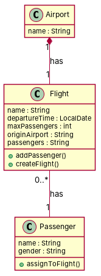

R1: In the airline domain, an airport has a name of type string. R2: A flight has a maximum number of passengers which is of type integer R3: An airplane has a name which is of type string. R4: a passenger in SimpleAirlineDomain has a name and a gender R5: A time consists of a year, a day, and a minute. R6: Each airport has multiple flights that depart from it. Each flight can depart from only one airport R7: A flight in an Airpline Domain has a unique time of departure and that timing is specific for that flight. R8: The model defines two classes, one called 'Flight' and the other called 'Passenger'. The class 'Flight' is connected via a directed association to class 'Passenger' which means that the associated 'Passenger' object is reachable from a 'Flight' object. One end of the association is labeled 'passenger' and also carries the multiplicity constraint '0..*', meaning that a 'Passenger' object can be associated with 0 or more 'Flight' objects. R9: Each flight has exactly one origin airport. R10: An airline conducts any number of flights. R11: Each passenger is assigned to exactly one flight.
Red, struck-through: removed by ambiguity removal; green: added.
| actors (0 → 0) |
|---|
| classes (6 → 5) |
|---|
| Airport |
| Association |
| Flight |
| Object |
| Passenger |
| TypeString |
| attributes (5 → 5) |
|---|
| Airport.name |
| Flight.origin airport |
| Passenger.gender |
| Passenger.name |
| TypeString.name |
| relations (3 → 3) |
|---|
| association: Passenger -> Flight |
| has: Airport -> Flight |
| has: Flight -> Passenger |
| id | req | type | cue | status | readings / explanation |
|---|---|---|---|---|---|
| A1 | R6 | quantifier | multiple | resolved | Each airport has multiple flights that depart from it.; Each airport has at least one flight that departs from it. The phrase 'multiple' could imply that an airport must have more than one flight, or it could mean at least one flight. |
| A2 | R8 | coordination | and+or | resolved | One end of the association is labeled 'passenger' and also carries the multiplicity constraint '0..*', meaning that a 'Passenger' object can be associated with 0 or more 'Flight' objects.; One end of the association is labeled 'passenger' and also carries the multiplicity constraint '1..*', meaning that a 'Passenger' object can be associated with 1 or more 'Flight' objects. The use of 'and also' suggests that the multiplicity constraint and the label are related, but the exact relationship is unclear. |
| A3 | R8 | quantifier | 0 or more | rejected | One end of the association is labeled 'passenger' and also carries the multiplicity constraint '0..*', meaning that a 'Passenger' object can be associated with 0 or more 'Flight' objects.; One end of the association is labeled 'passenger' and also carries the multiplicity constraint '1..*', meaning that a 'Passenger' object can be associated with 1 or more 'Flight' objects. This is a duplicate of A2 and does not provide new information. |
| A4 | R10 | quantifier | any | resolved | An airline conducts any number of flights.; An airline conducts at least one flight. The phrase 'any number' could imply that an airline must conduct at least one flight, or it could mean that an airline can conduct zero flights. |


"""Code skeleton generated from the shared model of D2/SimpleAirlineDomain.
Every class and method records the requirement(s) it traces to."""
from __future__ import annotations
import dataclasses as _dc
import enum as _enum
import typing as _t
@_dc.dataclass
class Airport:
"""Source: R1"""
name: _t.Optional[str] = None
flight: _t.Optional["Flight"] = None
@_dc.dataclass
class Flight:
"""Source: R2, R6, R7, R9, R10"""
name: _t.Optional[str] = None
departureTime: _t.Optional[str] = None
maxPassengers: _t.Optional[int] = None
originAirport: _t.Optional[str] = None
passengers: _t.Optional[str] = None
passenger: _t.Optional["Passenger"] = None
def addPassenger(self) -> None:
"""Operation."""
raise NotImplementedError
def createFlight(self) -> None:
"""Operation."""
raise NotImplementedError
@_dc.dataclass
class Passenger:
"""Source: R4, R11"""
name: _t.Optional[str] = None
gender: _t.Optional[str] = None
def assignToFlight(self) -> None:
"""Operation."""
raise NotImplementedError
| python_compiles | True |
|---|---|
| java_compiles | True |
| attribute_mismatches | 0 |
| method_mismatches | 0 |
| use_cases | 0 |
| use_cases_without_actor | 0 |
| use_cases_without_method | 0 |
| actors_without_use_case | 0 |
| relations_to_unknown_class | 0 |
| inconsistencies | 0 |
| inconsistency_rate | 0.0 |
| requirement_coverage | 0.8182 |
| validator fixes | |
| assumptions for open ambiguities | [{"tag": "A3", "assumption": "The model assumes that a flight's departure time is represented by the 'departureTime' attribute in the Flight class, which is of type LocalDate, and not by a separate class for time as stated in R5."}] |
| element | P | R | F1 | TP/FP/FN |
|---|---|---|---|---|
| classes | 1.0 | 0.5 | 0.667 | 3/0/3 |
| attributes | 0.375 | 0.214 | 0.273 | 3/5/11 |
| relations | 1.0 | 0.5 | 0.667 | 2/0/2 |
| relations_strict | 1.0 | 0.5 | 0.667 | 2/0/2 |